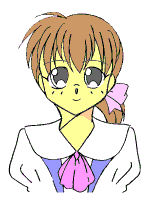
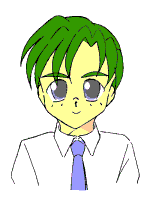

春——それは新しい生活、新しい出会いの季節。
高校生になった僕は漠然と、日常の何かが変わっていく予感をおぼえていた。
だけど…………
背中に流れる、長い黒髪——
ふんわりと盛り上がった、胸の双丘——
細い指先、桜色のくちびる、ぱっちりした目元、
そして、風になびいてふとももをくすぐる、スカートの裾——
通学路をうつむき加減に歩く今のボクは、何処からどう見ても真新しい制服に身を包んだ “女子高生” だった……
−少年少女文庫主催・多人数参加型掲示板イベント−
エントリーしていただいたＰＣは、運営側で紹介ページ「生徒名簿」に登録します。「Ｔ's☆Ｈｅａｒｔ」 キャラクターシート
●名前 ●プレイヤー名（作者の名前）ＴＳっ娘はもちろん、普通の男子、女子でもかまいません。なお、ＰＣは全て姫琴高校の生徒（１年生）になります。
●性別（現時点での） ●年齢（現時点での） ●クラス（デフォルトは桜組） ●所属クラブ
●一人称（複数ある場合は、かっこ付きで併記） ●愛称（まわりの人間が、自分のことをどう呼ぶか）
●家族構成 ●生活環境 自宅／親戚（知人）宅／下宿／一人暮らし／学生寮／その他
●学業成績 よい／そこそこ／わるい
●運動能力 よい／そこそこ／わるい
●得意なこと ●苦手なこと
●社交性 よい／そこそこ／おとなしい ●異性（男子／女子）に対して 積極的／普通／奥手（消極的）
●特記事項（必要があれば）
●喜多嶋 鈴ちゃん（運営側女子主人公）に対してひと言
●有賀野 伶也くん（運営側男子主人公）に対してひと言
（ＴＳっ娘（ＴＳキャラ）は、さらに以下の４つを記入してください）
●本名（元の名前） ●カテゴリー 変身／転生（生まれ変わり）／入れ替わり／憑依／超女装（皮物）／その他
●ＴＳの原因（理由、事情）
●ＴＳした自分に対して（複数回答あり）
戸惑っている／恥ずかしがっている／嫌がって（苦痛に感じて）いる／開き直っている／楽しんでいる／その他
|
現在、２０名以上の方がプレイヤーとして参加されています。 誠に申し訳ありませんが、新規参加の募集は、しばらく凍結させていただきます。 |
 |
運営側女子主人公 喜多嶋 鈴（きたじま りん） ＴＳっ娘で、一人称は「ボク」。 ドジっ娘属性あり。 気を抜くと精神女性化が進行する。 |
 |
運営側男子主人公 有賀野 伶也（ありがの れいや） 鈴の従兄弟。ほんわか系。 ＴＳっ娘を虜にする魅力（？）あり。 鈴の正体に……気づいてる？ |
＜「生徒会活動」の例＞また、お気に入りのＰＣへの応援メッセージや、「こんなことをしてほしい」といったリクエスト等もありましたら、同じように書き込んでください。
教職員、生徒会役員のキャラクター（ＮＰＣ）設定 ／ 特別教室や購買部（学食）の設定
特色あるクラブ活動や、そこの名物部員（部長）の設定 ／ 学校の噂や七不思議の設定
＜「番外編ＳＳ」の例＞
イベント本編の後日談 ／ 家や、寮でのひとこま ／ クラブやアルバイト、ショッピングや休日の様子
ひと知れず起こった事件（本編とは無関係にしてください）